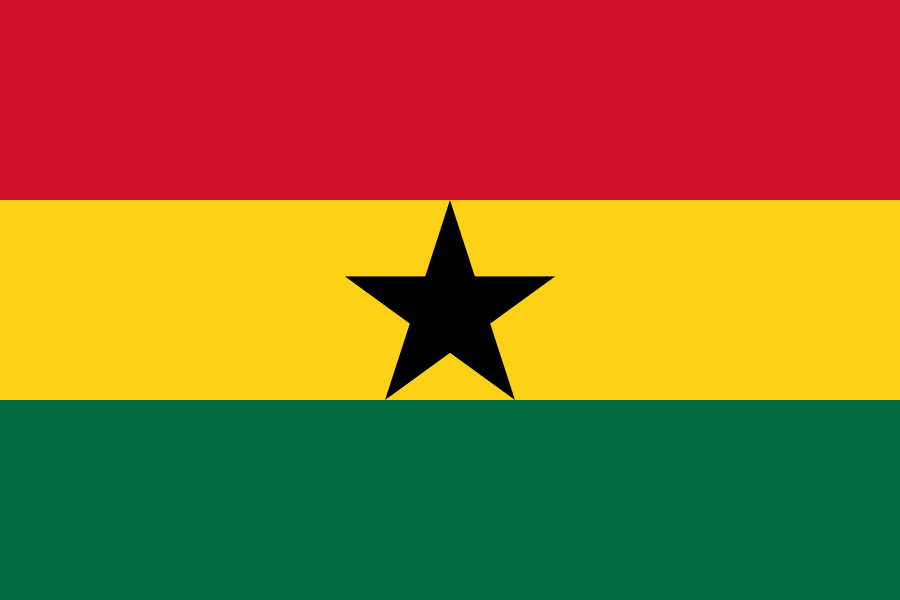

Croazia
Croazia
GhanaLa Croazia deve prendersi la partita; al Ghana può bastare controllarla.
La qualità croata a centrocampo e il peso di Baturina tra le linee spostano il pronostico sull'1-0. Il Ghana, ancora imbattuto difensivamente, può però tenere basso il ritmo e trascinare la sfida verso un finale sottile.
Preso il segno Croazia. Mancati risultato esatto 1-0, Under 2,5 e No Goal.
Le quote 1.90, 3.00 e 5.00 corrispondono, dopo la rimozione del margine, a circa 50% Croazia, 31% pareggio e 19% Ghana. Il modello porta la Croazia al 52%, con 29% pareggio e 19% Ghana: vantaggio reale, ma non da partita a senso unico.
L'Under 2,5 a 1.52 è coerente con un incontro in cui il Ghana può qualificarsi senza scoprirsi. Il mercato assegna più probabilità al No Goal rispetto al Goal; i primi due turni confermano una nazionale ghanese capace di proteggere l'area, con una sola rete segnata e nessuna subita.
Classifica e motivazioni
Il Ghana ha quattro punti dopo l'1-0 sul Panama e lo 0-0 con l'Inghilterra. Con un pareggio sale a cinque e si qualifica. La Croazia è a tre: ha perso 4-2 con l'Inghilterra e battuto 1-0 il Panama. Vincendo supera il Ghana e raggiunge certamente i sedicesimi.
Questa asimmetria conta: la Croazia deve produrre gioco, mentre il Ghana può difendere più basso e scegliere le transizioni. Se il risultato resta pari dopo l'intervallo, la pressione passerà quasi interamente sui croati.
La chiave Modric e Kovacic devono muovere Partey e Sibo fuori posizione per liberare Baturina. Se il numero 16 riceve fronte alla porta, Musa può attaccare l'area e Perisic può stringere sul secondo palo.
Formazioni e duelli
Croazia, 4-2-3-1: Livakovic; Stanisic, Sutalo, Pongracic, Gvardiol; Modric, Kovacic; Pasalic, Baturina, Perisic; Musa.
Ghana, 4-2-3-1: Asare; Mensah, Opoku, Adjete, Senaya; Partey, Sibo; Semenyo, Yirenkyi, Williams; Ayew.
La Croazia concentra qualità e palleggio nel quadrato Modric-Kovacic-Baturina-Pasalic. Il Ghana risponde con fisicità centrale e velocità esterna: Semenyo può attaccare lo spazio dietro Gvardiol, mentre Williams offre profondità sul lato opposto.
Tiri e tiri in porta
Proiezione Croazia: 13-17 tiri, 4-6 nello specchio. Ghana: 8-11 tiri, 2-4 in porta. Musa è il primo tiratore croato con 2-4 conclusioni; Baturina 2-3, Perisic e Pasalic 1-3.
Semenyo è il profilo ghanese con più volume potenziale, 2-4 tiri. Ayew si colloca nella fascia 1-3, Williams 1-2. La scelta più solida sui giocatori è Musa 2+ tiri; Baturina 1+ tiro in porta è l'opzione più aggressiva.
Corner
La Croazia dovrebbe avere più possesso e più attacchi posizionali: proiezione 5-7 corner contro 3-5. Perisic e Gvardiol possono generare deviazioni sul lato sinistro; il Ghana produce soprattutto da transizioni e seconde palle.
Scelta principale: Croazia più corner. La linea totale più naturale è 8-11 corner, con rischio al ribasso se il Ghana riesce a rallentare a lungo la partita.
Cartellini: Fischer D.
Drew Fischer ha una media storica di 3,35 gialli a partita su 253 gare censite. La proiezione è 3-5 cartellini complessivi, senza un profilo da over estremo.
Il Ghana è la squadra più esposta ai falli tattici perché dovrà contenere le ricezioni di Baturina e le uscite di Perisic. Partey è il primo nome per un cartellino ghanese; Adjete e Sibo seguono. Sul lato croato, Kovacic è il profilo più esposto alle transizioni di Semenyo.
Verdetto
La Croazia ha più strade per creare occasioni, ma il Ghana ha il risultato utile e una struttura difensiva che finora non ha concesso gol. Il pronostico centrale è 1-0, con 1-1 seconda scelta e 2-0 scenario successivo.
Giocate ordinate: Under 2,5 @ 1.52; No Goal @ 1.72; Croazia vincente @ 1.90; Croazia più corner. Per una combinazione prudente: 1X + Under 3,5. Per quota alta: risultato esatto 1-0.